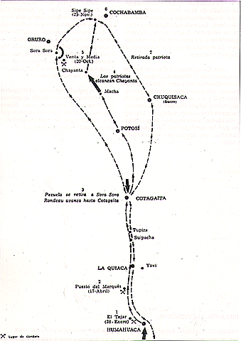

Sable
Sable de San Martín


El sable corvo del General José de San Martín es uno de los símbolos más importantes de la historia argentina.
Fue utilizado durante las campañas de la independencia y representa el liderazgo, la estrategia y el compromiso con la libertad de América.
Actualmente es considerado una reliquia histórica de enorme valor simbólico.